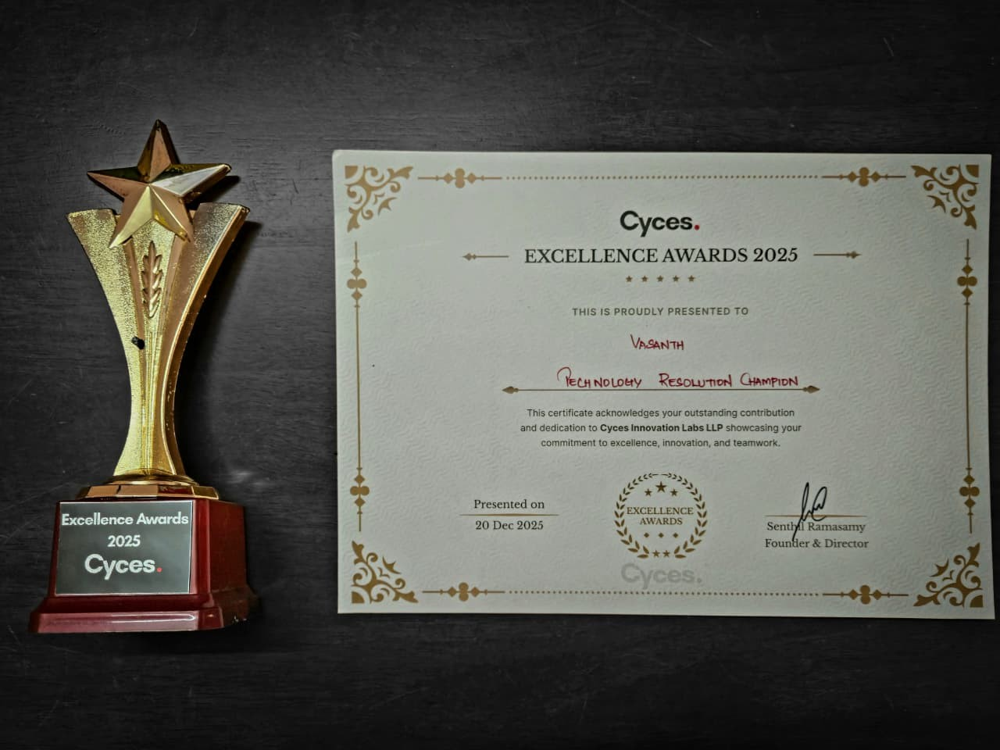

01 · Recognition · 2025

Cyces Excellence Awards 2025
Technology Resolution Champion.
Recognized by Cyces Innovation Labs LLP on 20 December 2025 for contribution and dedication. My work includes diagnosing production API issues, tracing failures through logs, and communicating findings to engineering and support teams.